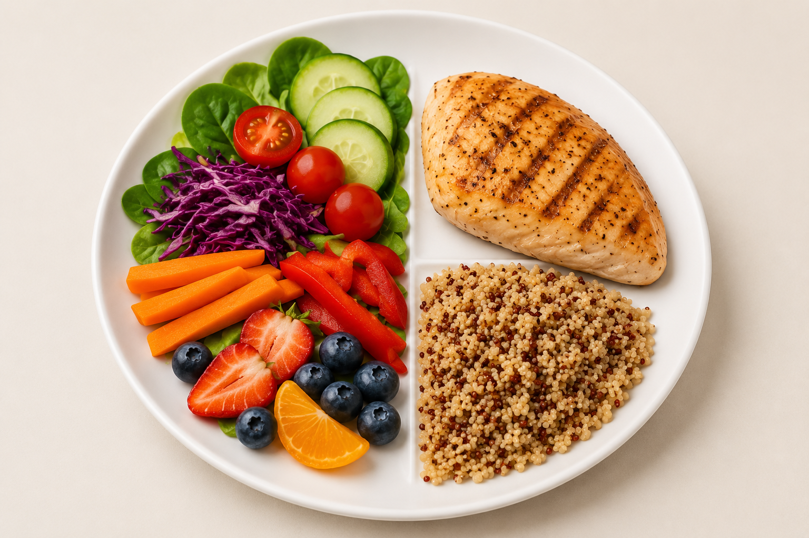

Carbohydrates
Carbohydrates are a major source of energy. Favor nutrient-rich choices such as whole grains, fruits, vegetables, and beans.
A balanced diet provides a variety of nutrients that support energy, growth, repair, and everyday body functions.
Carbohydrates are a major source of energy. Favor nutrient-rich choices such as whole grains, fruits, vegetables, and beans.
Protein supports tissue growth and repair. Useful sources include beans, lentils, eggs, fish, poultry, dairy, nuts, and seeds.
Unsaturated fats can be part of a balanced pattern. Try foods such as avocado, nuts, seeds, and some plant oils.
Vitamins help regulate many body processes. Eating a variety of colorful foods helps provide a broad range.
Minerals support functions such as bones, muscles, nerves, and fluid balance. Food variety is important.
Water is essential for normal body functions. Drink regularly and increase fluids when conditions or activity increase your needs.
A practical approach is to make vegetables and fruit a major part of meals, add a protein source, and choose a nutrient-rich grain or other carbohydrate.
